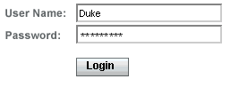
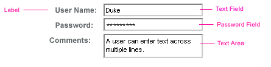
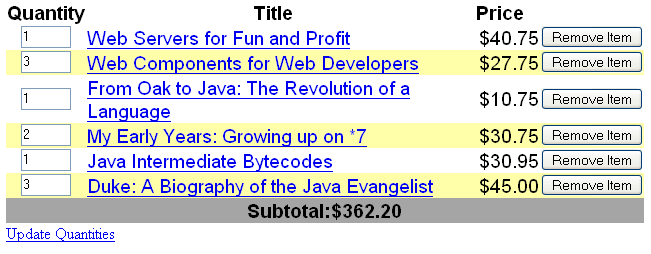
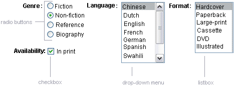
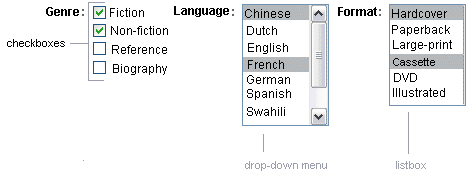
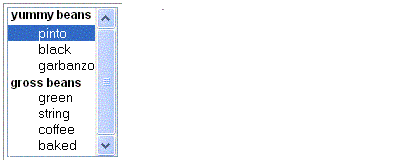

Adding UI Components to a Page Using the HTML Component Tags
The tags defined by the JavaServer Faces standard HTML render kit tag library represent HTML form components and other basic HTML elements. These components display data or accept data from the user. This data is collected as part of a form and is submitted to the server, usually when the user clicks a button. This section explains how to use each of the component tags shown in Table 10-2.
The next section explains the more important tag attributes that are common to most component tags. Please refer to the TLD documentation at http://java.sun.com/javaee/javaserverfaces/1.2/docs/tlddocs/index.html for a complete list of tags and their attributes.
For each of the components discussed in the following sections, Writing Bean Properties explains how to write a bean property bound to a particular UI component or its value.
UI Component Tag Attributes
In general, most of the component tags support these attributes:
immediate: If set to true, indicates that any events, validation, and conversion associated with the component should happen in the apply request values phase rather than a later phase.
rendered: Specifies a condition in which the component should be rendered. If the condition is not satisfied, the component is not rendered.
style: Specifies a Cascading Style Sheet (CSS) style for the tag.
styleClass: Specifies a CSS stylesheet class that contains definitions of the styles.
value: Identifies an external data source and binds the component’s value to it.
binding: Identifies a bean property and binds the component instance to it.
All of the UI component tag attributes (except id) can accept expressions, as defined by the unified EL described in Unified Expression Language.
The id Attribute
The id attribute is not required for a component tag except in the case when another component or a server-side class must refer to the component. If you don’t include an id attribute, the JavaServer Faces implementation automatically generates a component ID. Unlike most other JavaServer Faces tag attributes, the id attribute only takes expressions using the immediate evaluation syntax, which uses the ${} delimiters.
The immediate Attribute
UIInput components and command components (those that implement ActionSource, such as buttons and hyperlinks) can set the immediate attribute to true to force events, validations, and conversions to be processed during the apply request values phase of the life cycle. Page authors need to carefully consider how the combination of an input component’s immediate value and a command component’s immediate value determines what happens when the command component is activated.
Assume that you have a page with a button and a field for entering the quantity of a book in a shopping cart. If both the button’s and the field’s immediate attributes are set to true, the new value of the field will be available for any processing associated with the event that is generated when the button is clicked. The event associated with the button and the event, validation, and conversion associated with the field are all handled during the apply request values phase.
If the button’s immediate attribute is set to true but the field’s immediate attribute is set to false, the event associated with the button is processed without updating the field’s local value to the model layer. This is because any events, conversion, or validation associated with the field occurs during its usual phases of the life cycle, which come after the apply request values phase.
The bookshowcart.jsp page of the Duke’s Bookstore application has examples of components using the immediate attribute to control which component’s data is updated when certain buttons are clicked. The quantity field for each book has its immediate attribute set to false. (The quantity fields are generated by the UIData component. See Using Data-Bound Table Components, for more information.) The immediate attribute of the Continue Shopping hyperlink is set to true. The immediate attribute of the Update Quantities hyperlink is set to false.
If you click the Continue Shopping hyperlink, none of the changes entered into the quantity input fields will be processed. If you click the Update Quantities hyperlink, the values in the quantity fields will be updated in the shopping cart.
The rendered Attribute
A component tag uses a Boolean JavaServer Faces expression language (EL) expression, along with the rendered attribute, to determine whether or not the component will be rendered. For example, the check commandLink component on the bookcatalog.jsp page is not rendered if the cart contains no items:
<h:commandLink id="check"
...
rendered="#{cart.numberOfItems > 0}">
<h:outputText
value="#{bundle.CartCheck}"/>
</h:commandLink>Unlike nearly every other JavaServer Faces tag attribute, the rendered attribute is restricted to using rvalue expressions. As explained in Unified Expression Language, rvalue expressions can only read data; they cannot write the data back to the data source. Therefore, expressions used with rendered attributes can use the arithmetic operators and literals that rvalue expressions can use but lvalue expressions cannot use. For example, the expression in the preceding example uses the > operator.
The style and styleClass Attributes
The style and styleClass attributes allow you to specify Cascading Style Sheets (CSS) styles for the rendered output of your component tags. Displaying Error Messages with the message and messages Tags describes an example of using the style attribute to specify styles directly in the attribute. A component tag can instead refer to a CSS stylesheet class. The dataTable tag on the bookcatalog.jsp page of the Duke’s Bookstore application references the style class list-background:
<h:dataTable id="books"
...
styleClass="list-background"
value="#{bookDBAO.books}"
var="book">The stylesheet that defines this class is stylesheet.css, which is included in the application. For more information on defining styles, please the see Cascading Style Sheets Specification at http://www.w3.org/Style/CSS/.
The value and binding Attributes
A tag representing a component defined by UIOutput or a subclass of UIOutput uses value and binding attributes to bind its component’s value or instance respectively to an external data source. Binding Component Values and Instances to External Data Sources explains how to use these attributes.
Adding a Form Component
A UIForm component class represents an input form, which includes child components that contain data that is either presented to the user or submitted with the form.
Figure 11-1 shows a typical login form, in which a user enters a user name and password, and submits the form by clicking the Login button.
Figure 11-1 A Typical Form
The form tag represents the UIForm component on the page and encloses all the components that display or collect data from the user, as shown here:
<h:form> ... other JavaServer Faces tags and other content... </h:form>
The form tag can also include HTML markup to lay out the components on the page. The form tag itself does not perform any layout; its purpose is to collect data and to declare attributes that can be used by other components in the form. A page can include multiple form tags, but only the values from the form that the user submits will be included in the postback.
Using Text Components
Text components allow users to view and edit text in web applications. The basic kinds of text components are:
Label, which displays read-only text.
Text field, which allows users to enter text, often to be submitted as part of a form.
Password field, which is one kind of text field that displays a set of characters, such as asterisks, instead of the password that the user enters.
Text area, which is another kind of text field that allow users to enter multiple lines of text.
Figure 11-2 shows examples of these text components.
Figure 11-2 Example Text Components
An editable text component in a JavaServer Faces application is represented by a UIInput component. One example is a text field. A read-only text component in a JavaServer Faces application is represented by a UIOutput component. One example is a label.
The UIInput and UIOutput components can each be rendered in four ways to display more specialized text components. Table 11-3 lists all the renderers of UIInput and UIOutput and the tags that represent the component and renderer combination. Recall from Component Rendering Model that the name of a tag is composed of the name of the component and the name of the renderer. For example, the inputText tag refers to a UIInput component that is rendered with the Text renderer.
Table 11-3 UIInput and UIOutput Tags
The UIInput component tags support the following tag attributes in addition to those described at the beginning of Adding UI Components to a Page Using the HTML Component Tags. This list does not include all the attributes supported by the UIInput component tags, just those that page authors will use most often. Please refer to the html_basic.tld file for the complete list.
converter: Identifies a converter that will be used to convert the component’s local data. See Using the Standard Converters for more information on how to use this attribute.
converterMessage: Specifies an error message to display when the converter registered on the component fails.
dir: Specifies the direction of the text displayed by this component. Acceptable values are LTR, meaning left-to-right, and RTL, meaning right-to-left.
label: Specifies a name that can be used to identify this component in error messages.
lang: Specifies the code for the language used in the rendered markup, such as en_US.
required: Takes a boolean value that indicates whether or not the user must enter a value in this component.
requiredMessage: Specifies an error message to display when the user does not enter a value into the component.
validator: Identifies a method expression pointing to a backing bean method that performs validation on the component’s data. See Referencing a Method That Performs Validation for an example of using the validator tag.
validatorMessage: Specifies an error message to display when the validator registered on the component fails to validate the component’s local value.
valueChangeListener: Identifies a method expression that points to a backing bean method that handles the event of entering a value in this component. See Referencing a Method That Handles a Value-change Event for an example of using valueChangeListener.
The UIOutput component tags support the converter tag attribute in addition to those listed in Adding UI Components to a Page Using the HTML Component Tags. The rest of this section explains how to use selected tags listed in Table 11-3. The other tags are written in a similar way.
Rendering a Text Field with the inputText Tag
The inputText tag is used to display a text field. It represents the combination of a Text renderer and a UIInput component. A similar tag, the outputText tag, displays a read-only, single-line string. It represents the combination of a Text renderer and a UIOutput component. This section shows you how to use the inputText tag. The outputText tag is written in a similar way.
Here is an example of an inputText tag from the bookcashier.jsp page:
<h:inputText id="name" label="Customer Name" size="50"
value="#{cashier.name}"
required="true"
requiredMessage="#{customMessages.CustomerName}">
<f:valueChangeListener
type="com.sun.bookstore6.listeners.NameChanged" />
</h:inputText>The label attribute specifies a user-friendly name that will be used in the substitution parameters of error messages displayed for this component.
The value attribute refers to the name property of CashierBean. This property holds the data for the name component. After the user submits the form, the value of the name property in CashierBean will be set to the text entered in the field corresponding to this tag.
The required attribute causes the page to reload with errors displayed if the user does not enter a value in the name text field. The JavaServer Faces implementation checks whether the value of the component is null or is an empty String.
If your component must have a non-null value or a String value at least one character in length, you should add a required attribute to your component tag and set it to true. If your tag does have a required attribute that is set to true and the value is null or a zero-length string, no other validators registered on the tag are called. If your tag does not have a required attribute set to true, other validators registered on the tag are called, but those validators must handle the possibility of a null or zero-length string.
The requiredMessage attribute references an error message from a resource bundle, which is declared in the application configuration file. Refer to Registering Custom Error Messages for details on how to declare and reference the resource bundle.
Rendering a Label with the outputLabel Tag
The outputLabel tag is used to attach a label to a specified input field for accessibility purposes. The bookcashier.jsp page uses an outputLabel tag to render the label of a check box:
<h:selectBooleanCheckbox
id="fanClub"
rendered="false"
binding="#{cashier.specialOffer}" />
<h:outputLabel for="fanClub"
rendered="false"
binding="#{cashier.specialOfferText}" >
<h:outputText id="fanClubLabel"
value="#{bundle.DukeFanClub}" />
</h:outputLabel>
...The for attribute of the outputLabel tag maps to the id of the input field to which the label is attached. The outputText tag nested inside the outputLabel tag represents the actual label component. The value attribute on the outputText tag indicates the text that is displayed next to the input field.
Instead of using an outputText tag for the text displayed as a label, you can simply use the outputLabel tag’s value attribute. The following code snippet shows what the previous code snippet would look like if it used the value attribute of the outputLabel tag to specify the text of the label.
<h:selectBooleanCheckbox
id="fanClub"
rendered="false"
binding="#{cashier.specialOffer}" />
<h:outputLabel for="fanClub"
rendered="false"
binding="#{cashier.specialOfferText}"
value="#{bundle.DukeFanClub}" />
</h:outputLabel>
...
Rendering a Hyperlink with the outputLink Tag
The outputLink tag is used to render a hyperlink that, when clicked, loads another page but does not generate an action event. You should use this tag instead of the commandLink tag if you always want the URL (specified by the outputLink tag’s value attribute) to open and do not have to perform any processing when the user clicks on the link. The Duke’s Bookstore application does not utilize this tag, but here is an example of it:
<h:outputLink value="javadocs">
Documentation for this demo
</h:outputLink>The text in the body of the outputLink tag identifies the text the user clicks to get to the next page.
Displaying a Formatted Message with the outputFormat Tag
The outputFormat tag allows a page author to display concatenated messages as a MessageFormat pattern, as described in the API documentation for java.text.MessageFormat (see http://java.sun.com/javase/6/docs/api/java/text/MessageFormat.html). Here is an example of an outputFormat tag from the bookshowcart.jsp page of the Duke’s Bookstore application:
<h:outputFormat value="#{bundle.CartItemCount}">
<f:param value="#{cart.numberOfItems}"/>
</h:outputFormat>The value attribute specifies the MessageFormat pattern. The param tag specifies the substitution parameters for the message.
In the example outputFormat tag, the value for the parameter maps to the number of items in the shopping cart. When the message is displayed on the page, the number of items in the cart replaces the {0} in the message corresponding to the CartItemCount key in the bundle resource bundle:
Your shopping cart contains " + "{0,choice,0#no items|1#one item|1< {0} itemsThis message represents three possibilities:
Your shopping cart contains no items.
Your shopping cart contains one item.
Your shopping cart contains {0} items.
The value of the parameter replaces the {0} from the message in the sentence in the third bullet. This is an example of a value-expression-enabled tag attribute accepting a complex EL expression.
An outputFormat tag can include more than one param tag for those messages that have more than one parameter that must be concatenated into the message. If you have more than one parameter for one message, make sure that you put the param tags in the proper order so that the data is inserted in the correct place in the message.
A page author can also hard code the data to be substituted in the message by using a literal value with the value attribute on the param tag.
Rendering a Password Field with the inputSecret Tag
The inputSecret tag renders an <input type="password"> HTML tag. When the user types a string into this field, a row of asterisks is displayed instead of the text the user types. The Duke’s Bookstore application does not include this tag, but here is an example of one:
<h:inputSecret redisplay="false"
value="#{LoginBean.password}" />In this example, the redisplay attribute is set to false. This will prevent the password from being displayed in a query string or in the source file of the resulting HTML page.
Using Command Components for Performing Actions and Navigation
The button and hyperlink components are used to perform and action, such as submitting a form, and for navigating to another page.
Command components in JavaServer Faces applications are represented by the UICommand component, which performs an action when it is activated. The UICommand component supports two renderers: Button and Link as UICommand component renderers.
The commandButton tag represents the combination of a UICommand component and a Button renderer and is rendered as a button. The commandLink tag represents the combination of a UICommand component and a Link renderer and is rendered as a hyperlink.
In addition to the tag attributes listed in Adding UI Components to a Page Using the HTML Component Tags, the commandButton and commandLink tags can use these attributes:
action, which is either a logical outcome String or a method expression pointing to a bean method that returns a logical outcome String. In either case, the logical outcome String is used by the default NavigationHandler instance to determine what page to access when the UICommand component is activated.
actionListener, which is a method expression pointing to a bean method that processes an action event fired by the UICommand component.
See Referencing a Method That Performs Navigation for more information on using the action attribute.
See Referencing a Method That Handles an Action Event for details on using the actionListener attribute.
Rendering a Button with the commandButton Tag
The bookcashier.jsp page of the Duke’s Bookstore application includes a commandButton tag. When a user clicks the button, the data from the current page is processed, and the next page is opened. Here is the commandButton tag from bookcashier.jsp:
<h:commandButton value="#{bundle.Submit}"
action="#{cashier.submit}"/>Clicking the button will cause the submit method of CashierBean to be invoked because the action attribute references the submit method of the CashierBean backing bean. The submit method performs some processing and returns a logical outcome. This is passed to the default NavigationHandler, which matches the outcome against a set of navigation rules defined in the application configuration resource file.
The value attribute of the preceding example commandButton tag references the localized message for the button’s label. The bundle part of the expression refers to the ResourceBundle that contains a set of localized messages. The Submit part of the expression is the key that corresponds to the message that is displayed on the button. For more information on referencing localized messages, see Rendering Components for Selecting Multiple Values. See Referencing a Method That Performs Navigation for information on how to use the action attribute.
Rendering a Hyperlink with the commandLink Tag
The commandLink tag represents an HTML hyperlink and is rendered as an HTML <a> element. The commandLink tag is used to submit an action event to the application. See Implementing Action Listeners for more information on action events.
A commandLink tag must include a nested outputText tag, which represents the text the user clicks to generate the event. The following tag is from the chooselocale.jsp page from the Duke’s Bookstore application.
<h:commandLink id="NAmerica" action="bookstore"
actionListener="#{localeBean.chooseLocaleFromLink}">
<h:outputText value="#{bundle.English}" />
</h:commandLink>This tag will render the following HTML:
<a id="_id3:NAmerica" href="#"
onclick="document.forms[’_id3’][’_id3:NAmerica’].
value=’_id3:NAmerica’;
document.forms[’_id3’].submit();
return false;">English</a>
Note - The commandLink tag will render JavaScript. If you use this tag, make sure your browser is JavaScript-enabled.
Using Data-Bound Table Components
Data-bound table components display relational data in a tabular format. Figure 11-3 shows an example of this kind of table.
Figure 11-3 Table on the bookshowcart.jsp Page
In a JavaServer Faces application, the UIData component supports binding to a collection of data objects. It does the work of iterating over each record in the data source. The standard Table renderer displays the data as an HTML table. The UIColumn component represents a column of data within the table. Here is a portion of the dataTable tag used by the bookshowcart.jsp page of the Duke’s Bookstore example:
<h:dataTable id="items"
captionClass="list-caption"
columnClasses="list-column-center, list-column-left,
list-column-right, list-column-center"
footerClass="list-footer"
headerClass="list-header"
rowClasses="list-row-even, list-row-odd"
styleClass="list-background"
summary="#{bundle.ShoppingCart}"
value="#{cart.items}"
var="item">
<h:column headerClass="list-header-left">
<f:facet name="header">
<h:outputText value="#{bundle.ItemQuantity}" />
</f:facet>
<h:inputText id="quantity" size="4"
value="#{item.quantity}" >
...
</h:inputText>
...
</h:column>
<h:column>
<f:facet name="header">
<h:outputText value="#{bundle.ItemTitle}"/>
</f:facet>
<h:commandLink action="#{showcart.details}">
<h:outputText value="#{item.item.title}"/>
</h:commandLink>
</h:column>
...
<f:facet name="footer"
<h:panelGroup>
<h:outputText value="#{bundle.Subtotal}"/>
<h:outputText value="#{cart.total}" />
<f:convertNumber type="currency" />
</h:outputText>
</h:panelGroup>
</f:facet>
<f:facet name="caption"
<h:outputText value="#{bundle.Caption}"/>
</h:dataTable>Figure 11-3 shows a data grid that this dataTable tag can display.
The example dataTable tag displays the books in the shopping cart as well as the quantity of each book in the shopping cart, the prices, and a set of buttons, which the user can click to remove books from the shopping cart.
The column tags represent columns of data in a UIData component. While the UIData component is iterating over the rows of data, it processes the UIColumn component associated with each column tag for each row in the table.
The UIData component shown in the preceding code example iterates through the list of books (cart.items) in the shopping cart and displays their titles, authors, and prices. Each time UIData iterates through the list of books, it renders one cell in each column.
The dataTable and column tags use facets to represent parts of the table that are not repeated or updated. These include headers, footers, and captions.
In the preceding example, column tags include facet tags for representing column headers or footers. The column tag allows you to control the styles of these headers and footers by supporting the headerClass and footerClass attributes. These attributes accept space-separated lists of CSS style classes, which will be applied to the header and footer cells of the corresponding column in the rendered table.
Facets can have only one child, and so a panelGroup tag is needed if you want to group more than one component within a facet. Because the facet tag representing the footer includes more than one tag, the panelGroup is needed to group those tags. Finally, this dataTable tag includes a facet tag with its name attribute set to caption, causing a table caption to be rendered below the table.
This table is a classic use case for a UIData component because the number of books might not be known to the application developer or the page author at the time the application is developed. The UIData component can dynamically adjust the number of rows of the table to accommodate the underlying data.
The value attribute of a dataTable tag references the data to be included in the table. This data can take the form of
A list of beans
An array of beans
A single bean
A javax.faces.model.DataModel
A java.sql.ResultSet
A javax.servlet.jsp.jstl.sql.ResultSet
A javax.sql.RowSet
All data sources for UIData components have a DataModel wrapper. Unless you explicitly construct a DataModel wrapper, the JavaServer Faces implementation will create one around data of any of the other acceptable types. See Writing Bean Properties for more information on how to write properties for use with a UIData component.
The var attribute specifies a name that is used by the components within the dataTable tag as an alias to the data referenced in the value attribute of dataTable.
In the dataTable tag from the bookshowcart.jsp page, the value attribute points to a list of books. The var attribute points to a single book in that list. As the UIData component iterates through the list, each reference to item points to the current book in the list.
The UIData component also has the ability to display only a subset of the underlying data. This is not shown in the preceding example. To display a subset of the data, you use the optional first and rows attributes.
The first attribute specifies the first row to be displayed. The rows attribute specifies the number of rows, starting with the first row, to be displayed. For example, if you wanted to display records 2 through 10 of the underlying data, you would set first to 2 and rows to 9. When you display a subset of the data in your pages, you might want to consider including a link or button that causes subsequent rows to display when clicked. By default, both first and rows are set to zero, and this causes all the rows of the underlying data to display.
The dataTable tag also has a set of optional attributes for adding styles to the table:
captionClass: Defines styles for the table caption
columnClasses: Defines styles for all the columns
footerClass: Defines styles for the footer
headerClass: Defines styles for the header
rowClasses: Defines styles for the rows
styleClass: Defines styles for the entire table
Each of these attributes can specify more than one style. If columnClasses or rowClasses specifies more than one style, the styles are applied to the columns or rows in the order that the styles are listed in the attribute. For example, if columnClasses specifies styles list-column-center and list-column-right and if there are two columns in the table, the first column will have style list-column-center, and the second column will have style list-column-right.
If the style attribute specifies more styles than there are columns or rows, the remaining styles will be assigned to columns or rows starting from the first column or row. Similarly, if the style attribute specifies fewer styles than there are columns or rows, the remaining columns or rows will be assigned styles starting from the first style.
Adding Graphics and Images with the graphicImage Tag
In a JavaServer Faces application, the UIGraphic component represents an image. The graphicImage tag is used to render a UIGraphic component on a page. The Duke’s Bookstore application uses a graphicImage tag to display the map image on the chooselocale.jsp page:
<h:graphicImage id="mapImage" url="/template/world.jpg"
alt="#{bundle.chooseLocale}" usemap="#worldMap" />The url attribute specifies the path to the image. It also corresponds to the local value of the UIGraphic component so that the URL can be retrieved, possibly from a backing bean. The URL of the example tag begins with a /, which adds the relative context path of the web application to the beginning of the path to the image.
The title attribute specifies the alternative text displayed when the user mouses over the image. In this example, the title attribute refers to a localized message. See Performing Localization for details on how to localize your JavaServer Faces application.
The usemap attribute refers to the image map defined by the custom component, MapComponent, which is on the same page. See Chapter 13, Creating Custom UI Components for more information on the image map.
Laying Out Components with the UIPanel Component
In a JavaServer Faces application, you use the UIPanel component as a layout container for a set of component components. When you use the renderers from the HTML render kit, UIPanel is rendered as an HTML table. This component differs from UIData in that UIData can dynamically add or delete rows to accommodate the underlying data source, whereas UIPanel must have the number of rows predetermined. Table 11-4 lists all the renderers and tags corresponding to the UIPanel component.
Table 11-4 UIPanel Renderers and Tags
Renderer |
Tag |
Renderer Attributes |
Function |
|---|---|---|---|
columnClasses, columns, footerClass, headerClass, panelClass, rowClasses |
Displays a table |
||
layout |
Groups a set of components under one parent |
The panelGrid tag is used to represent an entire table. The panelGroup tag is used to represent rows in a table. Other UI component tags are used to represent individual cells in the rows.
The panelGrid tag has a set of attributes that specify CSS stylesheet classes: columnClasses, footerClass, headerClass, panelClass, and rowClasses. These stylesheet attributes are optional. The panelGrid tag also has a columns attribute. The columns attribute is required if you want your table to have more than one column because the columns attribute tells the renderer how to group the data in the table.
If the headerClass attribute value is specified, the panelGrid must have a header as its first child. Similarly, if a footerClass attribute value is specified, the panelGrid must have a footer as its last child.
The Duke’s Bookstore application includes three panelGrid tags on the bookcashier.jsp page. Here is a portion of one of them:
<h:panelGrid columns="3" headerClass="list-header"
rowClasses="list-row-even, list-row-odd"
styleClass="list-background"
title="#{bundle.Checkout}">
<f:facet name="header">
<h:outputText value="#{bundle.Checkout}"/>
</f:facet>
<h:outputText value="#{bundle.Name}" />
<h:inputText id="name" size="50"
value="#{cashier.name}"
required="true">
<f:valueChangeListener
type="listeners.NameChanged" />
</h:inputText>
<h:message styleClass="validationMessage" for="name"/>
<h:outputText value="#{bundle.CCNumber}"/>
<h:inputText id="ccno" size="19"
converter="CreditCardConverter" required="true">
<bookstore:formatValidator
formatPatterns="9999999999999999|
9999 9999 9999 9999|9999-9999-9999-9999"/>
</h:inputText>
<h:message styleClass="validationMessage" for="ccno"/>
...
</h:panelGrid>This panelGrid tag is rendered to a table that contains components for the customer of the bookstore to input personal information. This panelGrid tag uses stylesheet classes to format the table. The CSS classes are defined in the stylesheet.css file in the tut-install/javaeetutorial5/examples/web/bookstore6/web/ directory. The list-header definition is
.list-header {
background-color: #ffffff;
color: #000000;
text-align: center;
}Because the panelGrid tag specifies a headerClass, the panelGrid must contain a header. The example panelGrid tag uses a facet tag for the header. Facets can have only one child, and so a panelGroup tag is needed if you want to group more than one component within a facet. Because the example panelGrid tag has only one cell of data, a panelGroup tag is not needed.
The panelGroup tag has one attribute, called layout, in addition to those listed in UI Component Tag Attributes. If the layout attribute has the value block then an HTML div element is rendered to enclose the row; otherwise, an HTML span element is rendered to enclose the row. If you are specifying styles for the panelGroup tag, you should set the layout attribute to block in order for the styles to be applied to the components within the panelGroup tag. This is because styles such as those that set width and height are not applied to inline elements, which is how content enclosed by the span element is defined.
A panelGroup tag can also be used to encapsulate a nested tree of components so that the tree of components appears as a single component to the parent component.
The data represented by the nested component tags is grouped into rows according to the value of the columns attribute of the panelGrid tag. The columns attribute in the example is set to 3, and therefore the table will have three columns. In which column each component is displayed is determined by the order that the component is listed on the page modulo 3. So if a component is the fifth one in the list of components, that component will be in the 5 modulo 3 column, or column 2.
Rendering Components for Selecting One Value
Another common UI component is one that allows a user to select one value, whether it be the only value available or one of a set of choices. The most common examples of this kind of component are:
A check box, which represents boolean state
A set of radio buttons
A drop-down menu, which displays a scrollable list
A list box, which displays an unscrollable list
Figure 11-4 shows examples of these components.
Figure 11-4 Example Select One Components
Displaying a Check Box Using the selectBooleanCheckbox Tag
The UISelectBoolean class defines components that have a boolean value. The selectBooleanCheckbox tag is the only tag that JavaServer Faces technology provides for representing boolean state. The Duke’s Bookstore application includes a selectBooleanCheckbox tag on the bookcashier.jsp page:
<h:selectBooleanCheckbox
id="fanClub"
rendered="false"
binding="#{cashier.specialOffer}" />
<h:outputLabel
for="fanClub"
rendered="false"
binding="#{cashier.specialOfferText}">
<h:outputText
id="fanClubLabel"
value="#{bundle.DukeFanClub}" />
</h:outputLabel>This example tag displays a check box to allow users to indicate whether they want to join the Duke Fan Club. The label for the check box is rendered by the outputLabel tag. The actual text is represented by the nested outputText tag. Binding a Component Instance to a Bean Property discusses this example in more detail.
Displaying a Menu Using the selectOneMenu Tag
A UISelectOne component allows the user to select one value from a set of values. This component can be rendered as a list box, a set of radio buttons, or a menu. This section explains the selectOneMenu tag. The selectOneRadio and selectOneListbox tags are written in a similar way. The selectOneListbox tag is similar to the selectOneMenu tag except that selectOneListbox defines a size attribute that determines how many of the items are displayed at once.
The selectOneMenu tag represents a component that contains a list of items, from which a user can choose one item. The menu is also commonly known as a drop-down list or a combo box. The following code snippet shows the selectOneMenu tag from the bookcashier.jsp page of the Duke’s Bookstore application. This tag allows the user to select a shipping method:
<h:selectOneMenu id="shippingOption"
required="true"
value="#{cashier.shippingOption}">
<f:selectItem
itemValue="2"
itemLabel="#{bundle.QuickShip}"/>
<f:selectItem
itemValue="5"
itemLabel="#{bundle.NormalShip}"/>
<f:selectItem
itemValue="7"
itemLabel="#{bundle.SaverShip}"/>
</h:selectOneMenu>The value attribute of the selectOneMenu tag maps to the property that holds the currently selected item’s value. You are not required to provide a value for the currently selected item. If you don’t provide a value, the first item in the list is selected by default.
Like the selectOneRadio tag, the selectOneMenu tag must contain either a selectItems tag or a set of selectItem tags for representing the items in the list. The UISelectItem, UISelectItems, and UISelectItemGroup Components explains these tags.
Rendering Components for Selecting Multiple Values
In some cases, you need to allow your users to select multiple values rather than just one value from a list of choices. You can do this using one of the following kinds of components:
A set of check boxes
A drop-down menu
A list box
Figure 11-5 shows examples of these components.
Figure 11-5 Example Select Many Components
The UISelectMany class defines a component that allows the user to select zero or more values from a set of values. This component can be rendered as a set of check boxes, a list box, or a menu. This section explains the selectManyCheckbox tag. The selectManyListbox tag and selectManyMenu tag are written in a similar way.
A list box differs from a menu in that it displays a subset of items in a box, whereas a menu displays only one item at a time when the user is not selecting the menu. The size attribute of the selectManyListbox tag determines the number of items displayed at one time. The list box includes a scroll bar for scrolling through any remaining items in the list.
The selectManyCheckbox tag renders a set of check boxes, with each check box representing one value that can be selected. Duke’s Bookstore uses a selectManyCheckbox tag on the bookcashier.jsp page to allow the user to subscribe to one or more newsletters:
<h:selectManyCheckbox
id="newsletters"
layout="pageDirection"
value="#{cashier.newsletters}">
<f:selectItems
value="#{newsletters}"/>
</h:selectManyCheckbox>The value attribute of the selectManyCheckbox tag identifies the CashierBean backing bean property, newsletters, for the current set of newsletters. This property holds the values of the currently selected items from the set of check boxes. You are not required to provide a value for the currently selected items. If you don’t provide a value, the first item in the list is selected by default.
The layout attribute indicates how the set of check boxes are arranged on the page. Because layout is set to pageDirection, the check boxes are arranged vertically. The default is lineDirection, which aligns the check boxes horizontally.
The selectManyCheckbox tag must also contain a tag or set of tags representing the set of check boxes. To represent a set of items, you use the selectItems tag. To represent each item individually, you use a selectItem tag for each item. The following subsection explains these tags in more detail.
The UISelectItem, UISelectItems, and UISelectItemGroup Components
UISelectItem and UISelectItems represent components that can be nested inside a UISelectOne or a UISelectMany component. UISelectItem is associated with a SelectItem instance, which contains the value, label, and description of a single item in the UISelectOne or UISelectMany component.
The UISelectItems instance represents either of the following:
A set of SelectItem instances, containing the values, labels, and descriptions of the entire list of items
A set of SelectItemGroup instances, each of which represents a set of SelectItem instances
Figure 11-6 shows an example of a list box constructed with a SelectItems component representing two SelectItemGroup instances, each of which represents two categories of beans. Each category is an array of SelectItem instances.
Figure 11-6 An Example List Box Created Using SelectItemGroup Instances
The selectItem tag represents a UISelectItem component. The selectItems tag represents a UISelectItems component. You can use either a set of selectItem tags or a single selectItems tag within your selectOne or selectMany tag.
The advantages of using the selectItems tag are as follows:
You can represent the items using different data structures, including Array, Map and Collection. The data structure is composed of SelectItem instances or SelectItemGroup instances.
You can concatenate different lists together into a single UISelectMany or UISelectOne component and group the lists within the component, as shown in Figure 11-6.
You can dynamically generate values at runtime.
The advantages of using selectItem are as follows:
The page author can define the items in the list from the page.
You have less code to write in the bean for the selectItem properties.
For more information on writing component properties for the UISelectItems components, see Writing Bean Properties. The rest of this section shows you how to use the selectItems and selectItem tags.
Using the selectItems Tag
Here is the selectManyCheckbox tag from the section Rendering Components for Selecting Multiple Values:
<h:selectManyCheckbox
id="newsletters"
layout="pageDirection"
value="#{cashier.newsletters}">
<f:selectItems
value="#{newsletters}"/>
</h:selectManyCheckbox>The value attribute of the selectItems tag is bound to the newsletters managed bean, which is configured in the application configuration resource file. The newsletters managed bean is configured as a list:
<managed-bean>
<managed-bean-name>newsletters</managed-bean-name>
<managed-bean-class>
java.util.ArrayList</managed-bean-class>
<managed-bean-scope>application</managed-bean-scope>
<list-entries>
<value-class>javax.faces.model.SelectItem</value-class>
<value>#{newsletter0}</value>
<value>#{newsletter1}</value>
<value>#{newsletter2}</value>
<value>#{newsletter3}</value>
</list-entries>
</managed-bean>
<managed-bean>
<managed-bean-name>newsletter0</managed-bean-name>
<managed-bean-class>
javax.faces.model.SelectItem</managed-bean-class>
<managed-bean-scope>none</managed-bean-scope>
<managed-property>
<property-name>label</property-name>
<value>Duke’s Quarterly</value>
</managed-property>
<managed-property>
<property-name>value</property-name>
<value>200</value>
</managed-property>
</managed-bean>
...As shown in the managed-bean element, the UISelectItems component is a collection of SelectItem instances. See Initializing Array and List Properties for more information on configuring collections as beans.
You can also create the list corresponding to a UISelectMany or UISelectOne component programmatically in the backing bean. See Writing Bean Properties for information on how to write a backing bean property corresponding to a UISelectMany or UISelectOne component.
The arguments to the SelectItem constructor are:
An Object representing the value of the item
A String representing the label that displays in the UISelectMany component on the page
A String representing the description of the item
UISelectItems Properties describes in more detail how to write a backing bean property for a UISelectItems component.
Using the selectItem Tag
The selectItem tag represents a single item in a list of items. Here is the example from Displaying a Menu Using the selectOneMenu Tag:
<h:selectOneMenu
id="shippingOption" required="true"
value="#{cashier.shippingOption}">
<f:selectItem
itemValue="2"
itemLabel="#{bundle.QuickShip}"/>
<f:selectItem
itemValue="5"
itemLabel="#{bundle.NormalShip}"/>
<f:selectItem
itemValue="7"
itemLabel="#{bundle.SaverShip}"/>
</h:selectOneMenu>The itemValue attribute represents the default value of the SelectItem instance. The itemLabel attribute represents the String that appears in the drop-down menu component on the page.
The itemValue and itemLabel attributes are value-binding-enabled, meaning that they can use value-binding expressions to refer to values in external objects. They can also define literal values, as shown in the example selectOneMenu tag.
Displaying Error Messages with the message and messages Tags
The message and messages tags are used to display error messages when conversion or validation fails. The message tag displays error messages related to a specific input component, whereas the messages tag displays the error messages for the entire page.
Here is an example message tag from the guessNumber application, discussed in Steps in the Development Process:
<h:inputText id="userNo" value="#{UserNumberBean.userNumber}">
<f:validateLongRange minimum="0" maximum="10" />
<h:commandButton id="submit"
action="success" value="Submit" /><p>
<h:message
style="color: red;
font-family: ’New Century Schoolbook’, serif;
font-style: oblique;
text-decoration: overline" id="errors1" for="userNo"/>The for attribute refers to the ID of the component that generated the error message. The error message is displayed at the same location that the message tag appears in the page. In this case, the error message will appear after the Submit button.
The style attribute allows you to specify the style of the text of the message. In the example in this section, the text will be red, New Century Schoolbook, serif font family, and oblique style, and a line will appear over the text. The message and messages tags support many other attributes for defining styles. Please refer to the TLD documentation for more information on these attributes.
Another attribute the messages tag supports is the layout attribute. Its default value is list, which indicates that the messages are displayed in a bulleted list using the HTML ul and li elements. If you set the attribute to table, the messages will be rendered in a table using the HTML table element.
The preceding example shows a standard validator is registered on input component. The message tag displays the error message associated with this validator when the validator cannot validate the input component’s value. In general, when you register a converter or validator on a component, you are queueing the error messages associated with the converter or validator on the component. The message and messages tags display the appropriate error messages that are queued on the component when the validators or converters registered on that component fail to convert or validate the component’s value.
All the standard error messages that come with the standard converters and validators are listed in section 2.5.4 of the JavaServer Faces specification. An application architect can override these standard messages and supply error messages for custom converters and validators by registering custom error messages with the application by means of the message-bundle element of the application configuration file. Referencing Error Messages explains more about error messages.